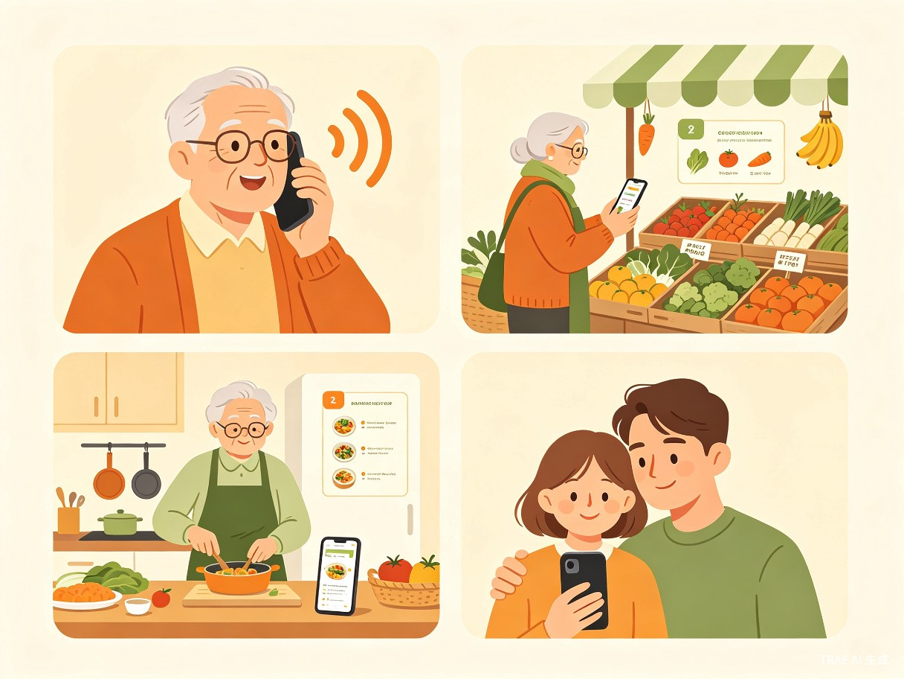

1 创意介绍
想解决什么问题
很多老年人每天为"吃什么"发愁，既要考虑口味偏好，又要兼顾高血压、糖尿病等基础病的饮食限制，还要避免药物与食物的冲突。子女不在身边时，老人自己很难做出营养均衡又安全的饮食选择。现有的食谱 App 字体小、操作复杂，对老年人并不友好。
为什么会想到做这个
我注意到身边的长辈常常因为记不住用药期间的饮食禁忌而担心，也看到他们在手机上找菜谱时因为字太小、步骤太多而放弃。我想做一个真正为老年人设计的工具，让他们吃得安心、用得顺手。
产品形态：一款面向老年人的适老化微信小程序，支持语音输入、大字体界面，根据老人的年龄、性别、城市、基础病和用药情况，智能推荐安全、营养、易操作的食谱。
2 目标用户及痛点
面向哪些用户
60 岁以上、有基础病（如高血压、糖尿病、高血脂等）且需要长期服药的独居或半独居老年人，以及关心父母饮食健康的子女。
使用场景
晨间规划
早晨起床后，老人想规划一天的菜单，打开小程序获取当日推荐
买菜指引
买菜前，老人不确定哪些食材适合自己，语音询问获取建议
用药安全
服药期间，老人不确定某种食物是否会影响药效，快速查询禁忌
远程关怀
子女远程帮父母查看推荐食谱，电话指导烹饪
当前痛点
- 老人主要依赖经验做饭或子女口头叮嘱，容易遗漏用药期间的饮食禁忌
- 普通食谱 App 字体小、步骤复杂，老人看不清、学不会
- 医院或社区的营养建议往往是一次性的，无法融入日常饮食决策

3 价值与意义
效率提升
将原本需要老人记忆大量饮食知识、反复咨询子女的决策过程，简化为"说一句话、点几下"就能获取个性化推荐，大幅降低信息获取门槛。
社会价值
中国 60 岁以上人口已超过 2.8 亿，大量老人面临"吃不对、不敢吃、不会吃"的困境。用技术回应真实的社会需求，让科技温暖最需要关怀的群体。
4 技术方案
前端采用微信小程序，后端使用轻量级服务，核心能力依赖 AI 大模型。
| 模块 | 技术选型 | 说明 |
|---|---|---|
| 前端 | 微信小程序 | 无需下载，老人扫码即用；原生支持语音输入 |
| 后端 | Node.js / Python | 轻量服务，处理用户数据与食谱推荐逻辑 |
| AI 能力 | 大语言模型 API | 自然语言理解、个性化食谱生成、用药禁忌判断 |
| 数据库 | 轻量数据库 | 存储用户信息、食谱库、用药禁忌知识库 |
核心功能实现
- 语音输入：调用微信小程序语音识别 API，将语音转为文字后送入大模型解析
- 个性化推荐：将用户年龄、性别、基础病、用药信息作为 Prompt 上下文，让大模型生成符合约束的食谱
- 用药禁忌提醒：预置常见药物与食物的禁忌知识库，大模型在生成食谱时自动过滤冲突食材并给出提醒
- 大字体界面：采用 18px 以上字号、高对比度配色、简洁布局，减少视觉负担
5 实现计划
需求细化 + 原型设计
产品原型图、用户画像确认
前端页面开发 + 语音输入接入
可交互的小程序页面
后端服务搭建 + AI 推荐逻辑联调
完整的食谱推荐流程
用药禁忌功能 + 适老化优化
完整可用的 MVP
测试优化 + 用户试用反馈
稳定版本 + 演示视频
6 团队分工
目前为个人参赛，以下分工按角色职责描述，后续可根据实际情况调整。
| 角色 | 职责 |
|---|---|
| 产品经理 | 需求分析、用户调研、原型设计 |
| 前端开发 | 小程序页面开发、适老化交互实现 |
| 后端开发 | 服务搭建、数据库设计、API 对接 |
| AI 应用开发 | Prompt 工程、大模型接口调优、推荐逻辑 |
当前状态：一人兼顾产品设计与开发，利用 TRAE 的 AI 辅助编程能力降低技术门槛，快速推进原型落地。
7 差异化亮点
真正适老
不是把普通 App 字体放大，而是从交互逻辑上为老人设计——语音优先、步骤极简、反馈明确。
用药联动
将饮食推荐与用药禁忌结合，解决老人最关心的"吃了会不会影响药效"问题。
亲情连接
支持子女远程查看父母的饮食记录和推荐，让关心有具体的落脚点。